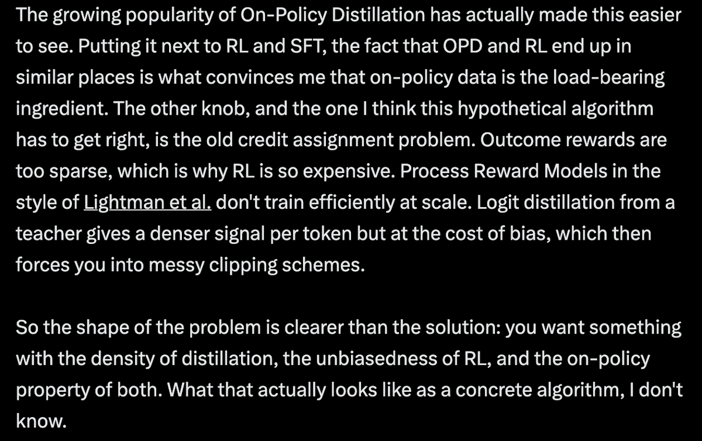

这条推文到底在说什么
它不是在说“GRPO 已经过时”，而是在说 GRPO 的 outcome-level credit 太粗，下一步要解决局部责任归因。
把它翻译成算法语言：当前 GRPO/RLVR 的优点是 on-policy，也就是模型在自己真实会遇到的状态分布上采样；缺点是奖励通常只在最终答案或最终任务成功处出现，导致整段推理、工具调用或 agent rollout 共享一个很粗的 advantage。下一步突破要在不破坏 on-policy 的前提下，把最终结果的责任更细地分配给 token、step、turn、环境反馈或 critic 指导。
为什么 GRPO 还重要
GRPO 的核心价值不是“最精细的 credit”，而是把 RLVR 做成可扩展的 on-policy group comparison。它让模型从自己生成的候选中学习，减少 SFT/off-policy distillation 的训练-推理分布错位。
为什么 outcome reward 不够
如果一个 20k token 的 reasoning trace 或 100 轮 agent 任务最后失败，终局 reward 只能说“整条轨迹不好”，却不能指出是第 3 个工具调用、某个错误中间结论，还是一次坏 summary 导致失败。
为什么 dense signal 有风险
Teacher logit distillation、PRM、critic 都能提供更密信号，但密不等于真。teacher 可能看到了 privileged answer，critic 可能过期或奖励 hacking，PRM 标签可能带来偏差。
同一轴线：更密的责任分配，但别牺牲低偏差
帖子提到的 ECHO、Composer2、self-distillation、OPD/OPSD，可以放到同一张图里理解。
| 方法线索 | 它试图变密的对象 | 主要收益 | 主要风险 |
|---|---|---|---|
| GRPO / RLVR | 同一 prompt 下多个完整回答的 outcome reward | on-policy，直接优化最终可验证目标，工程上可扩展 | token/step 都共享终局 advantage；全对/全错时梯度弱或消失 |
| OPD / OPSD | 学生自己 rollout 上的每个 token 分布差异 | 保持 on-policy，同时给 dense token-level feedback | teacher conditioning 带来 bias；KL 信号可能被风格 token 主导，需要 clipping |
| Pedagogical RL | 成功轨迹是否既正确又在学生当前分布附近 | 把 privileged information 用来采样“可学的成功轨迹”，而不只是评分 | 仍是早期结果；learnability score 的定义会影响最终行为 |
| ECHO | agent rollout 的诊断反馈和 refinement gain | critic 和 policy 同步演化，避免固定 critic 在 on-policy drift 中过期 | 依赖外部 reward/evaluator 的质量；critic 可能学习 evaluator artifact |
| Composer 2 | 真实 coding agent 长轨迹中的 actions、summaries、tool use | 训练 harness 贴近真实 Cursor 使用，长任务 reward 覆盖实际 agent 行为 | 报告显示仍大量使用最终 reward；credit 分配仍偏粗，但在工程上处理长 horizon |
我的理解：这些工作共享一个目标：不再把“最终答对/答错”粗暴广播给整条轨迹。它们的分歧在于信号从哪里来：来自 teacher 分布、来自 privileged answer、来自可学习性打分、来自 co-evolving critic，还是来自真实 agent 环境中的最终状态。
几个代表方法一步步讲清楚
这里不做完整论文精读，只解释它们为什么被原帖放在同一类技术趋势里。
OPSD：同一个模型，一边当学生，一边带答案当老师
OPSD 的输入是一组题目和 privileged solution，例如正确答案或参考推理。训练时，学生策略只看题目并生成自己的 rollout；老师策略是同一个模型，但额外看到正确答案或参考轨迹。然后两者在学生已经生成的 prefix 上计算下一 token 分布，训练目标是让学生靠近老师分布。
这就把“最终答对才有 reward”改成“每个 token 都能拿到老师分布给出的方向”。论文把它解释为 dense token-level reward：老师比学生更偏好的学生 token，会获得更高局部信号。
注意它不是无偏 RL。它牺牲了一部分无偏性，因为老师看到了 privileged answer；但它换来了更密、更省 token 的训练信号。论文中 Qwen3-1.7B 的平均结果从 base 37.1、GRPO 37.7 提到 OPSD 43.4，且作者强调 GRPO 在早期会因为 reward diversity collapse 而停滞。
Pedagogical RL：不是让老师给答案，而是让老师采样“学生能学会的成功轨迹”
Pedagogical RL 的问题更尖锐：如果 teacher 看到了答案，它可能产生一种正确但学生几乎不可能自己走到的捷径轨迹。这样轨迹虽然 answer-correct，却不是 teachable。它提出的理想分布是 student policy conditioned on success，也就是离学生当前能力最近的成功样本。
方法上，先训练 privileged self-teacher，让它最大化“成功 reward × learnability score”。learnability score 用学生当前模型对每个 token 的 surprisal 来衡量，并特别惩罚单个极端突兀 token 的 spike。然后再用 surprisal-gated imitation 把 teacher 轨迹蒸馏给学生：学生已经觉得合理的 token 权重大，过于震惊的 token 权重小。
这个方法很接近原帖说的目标：它既想要比 outcome reward 更密的训练信号，也明确意识到 teacher bias，尝试用“学生可学习性”来约束偏差。
ECHO：credit 不一定给 token，也可以给“哪条 critique 真让策略变好”
ECHO 面向 open-world agent learning。问题是：很多 critique-guided RL 使用固定 critic 或离线 critic，但 policy 会随着 on-policy RL 改变，错误类型也会变。早期可能犯粗糙流程错，后期可能只剩细微规划错；固定 critic 会变 stale。
ECHO 的训练循环是：policy 先生成 initial rollout，reward model 打分；critic 生成多条诊断反馈；policy 基于每条 critique 生成 refined rollout；reward model 再打分；critic 的 reward 来自 refinement 造成的增益，policy 的 reward 来自 refined rollout 分数。然后 policy 和 critic 通过 dual-track GRPO 同步更新。
它在原帖里的意义：credit assignment 被转移到了“哪条诊断/哪次环境反馈真正带来改进”。这是一种 agentic 场景的局部 credit，不只是 token 级。
Composer 2：真实 coding agent 的长 horizon 让 credit assignment 无法回避
Composer 2 报告不是一个专门的 credit assignment 论文，但它说明了为什么这个问题在 coding agent 里会变得迫切。一个 coding agent rollout 包括读文件、改代码、跑测试、总结状态、处理工具输出，最终 reward 基于代码正确性、简洁性和工程原则。
报告中明确说，Composer 2 通过 continued pretraining 和大规模 RL 训练 agentic software engineering；其 RL pipeline 是异步的，并尽量减少 samples 变得 off-policy。它还使用 self-summary 处理长 horizon：一个训练 rollout 可以包含多次 generation 和 summary，最终 reward 会给链条中所有 model-produced tokens，包括 agent response 和 self-summary。
这说明当前工程最前沿并不总是先发明精细 credit；很多时候是先把真实长轨迹环境跑起来，再逐步修补 bias、off-policy drift、length bias、summary credit 这些问题。
这条判断有什么边界
原帖的判断很有洞察，但不能把它理解为已有方法已经稳定收敛。
“Dense” 不自动等于“正确”
每个 token 都有信号只是训练更容易，并不保证信号对最终能力是无偏的。OPSD 需要 KL clipping，Pedagogical RL 要定义 learnability，ECHO 依赖 reward model 校准，这些都是引入 bias 的位置。
“On-policy” 也不是银弹
on-policy 保证训练样本来自当前策略分布，但如果奖励太稀疏，采样仍然昂贵；如果 rollout 过长，单条轨迹内部的责任仍然难分；如果训练异步，样本仍可能部分 off-policy。
Agentic RL 的粒度和 reasoning RL 不同
数学推理里常见粒度是 token/step；agent 任务里更自然的粒度可能是 turn、tool call、environment feedback、summary、critic feedback。把 reasoning 的 token credit 直接搬到 agent 上通常不够。
现有证据仍偏早期
Pedagogical RL 是早期博客实验；ECHO 在若干 open-world environments 上有效，但依赖 evaluator；Composer 2 是产品级技术报告，很多训练细节无法完全复现。原帖更像趋势判断，不是定论。
我的判断：突破点在“找到可学习的成功”，不是“奖励更花哨”
如果只记一个点，记这个。
最重要的 insight：下一代训练算法可能不是简单把 outcome reward 改成 process reward，也不是简单把 teacher logits 当 dense reward。真正困难的是在三个目标之间找平衡：样本必须来自模型真实会访问的状态分布，信号必须足够密以解决长 horizon credit，信号又不能因为 teacher/critic/privileged context 而把模型拖向不可学的捷径。
这也是为什么 Pedagogical RL 的“nearest successes”概念很关键。它把问题从“怎样从正确答案学习”改成“怎样找到当前学生最可能学会的正确轨迹”。这比一般 distillation 更细，因为它意识到 correctness 和 learnability 是两个约束；也比一般 RL 更细，因为它不等模型盲采到成功，而是用 privileged information 主动提高采样命中率。
从工程角度看，ECHO 和 Composer 2 提醒我们，agentic setting 里 credit 可能不该只停留在 token。一个失败的 agent 可能不是某个 token 错，而是：读错环境反馈、summary 丢了约束、critic 只给泛泛建议、早期工具调用把状态改坏、异步 rollout 的 policy 已经 stale。下一代算法要能把这些结构性对象纳入 credit，而不只是把最终分数广播回所有 token。
所以我会这样理解原帖：GRPO 类方法证明了 on-policy RLVR 可以规模化；OPD/OPSD 证明了 dense token feedback 可以更省样本；ECHO/Pedagogical RL 这类方法开始意识到 dense feedback 必须受“是否可学习、是否随 policy 演化、是否低偏差”的约束。真正的突破，很可能是这些线索的组合，而不是单篇方法的直接胜出。
证据边界与资料索引
先读 X 原帖，再补读帖子涉及的代表方法。主帖短链实际指向配图页，不是外部论文。
